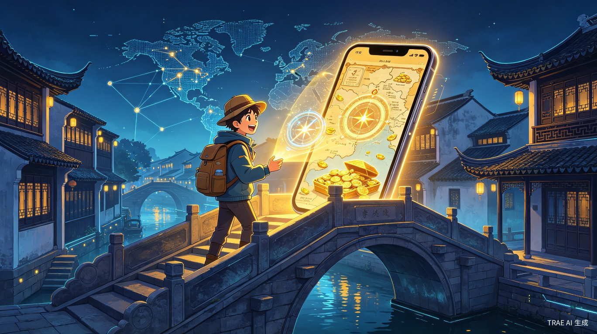
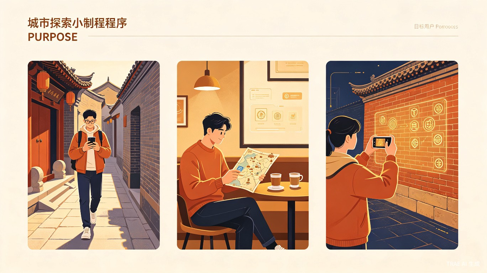

基于大模型的沉浸式城市实景解谜与文旅生态平台
LBS定位 × AI大模型 × 全球空间下钻
用AI大模型盘活沉睡的城市历史文化，让每一次城市漫步都成为一场独一无二的寻宝冒险
当前城市文旅体验同质化严重，传统Citywalk缺乏互动感，线下实体商家难以精准获取线上流量。游客在城市中只能"走马观花"，无法获得深度文化沉浸体验。
来源于年轻人对"沉浸式剧本杀"与"城市探索"的双重热爱。当古老城墙遇上AI大模型，当街头巷尾变成寻宝地图——城市本身就是最大的游乐场。
一款结合LBS定位与AI大模型的微信小程序，通过全球空间下钻、AI生成专属剧情及混合变现模式，打造虚实结合的城市寻宝生态。
从全球地图到城市街巷，从AI剧情到线下核销，打造完整的沉浸式寻宝闭环
从世界地图逐级下钻：全球 → 大洲 → 国家 → 城市 → 区域 → 坐标级任务点。每一次点击都是一次空间穿越，发现属于你的城市宝藏。
输入关键词（如"明代、砖墙、抗倭"），大模型2秒生成第一人称沉浸式剧本。AI自动审核语义合规与历史逻辑，确保内容质量。
玩家根据LBS定位到达真实地点，扫码核销、对暗号、寻找隐藏图腾。每个任务都是一段与城市历史的深度对话。
基础免费 + 广告解锁 + VIP订阅 + 商家推广。玩家获得沉浸式体验，商家获得精准客流，创作者获得收益分成。
精准定位核心用户群体，深刻理解他们的真实需求与使用场景

18-35岁热爱Citywalk、剧本杀及探索城市文化的年轻群体，以及需要引流的城市周边商家。
传统Citywalk路线千篇一律，游客只能走马观花，缺乏深度文化互动与个性化体验。
线下商家缺乏将线上流量转化为线下客流的低成本渠道，营销成本高、效果难追踪。
城市历史文化沉睡在博物馆和书本中，年轻人渴望更有趣、更沉浸的方式与城市对话。
文旅数字化与沉浸式娱乐的双重风口，为"寻迹"提供了广阔的市场空间
首创"基础免费 + 广告兜底 + VIP订阅 + 商家推广"的阶梯式商业闭环
所有主线任务、基础导航、打卡功能100%免费开放，最大化用户漏斗入口。
观看15秒短视频即可免费解锁AI语音讲解，降低付费门槛，保障用户体验。
¥19.9/月享无限AI语音、专属罗盘、积分1.5倍暴击、UGC收益分成提升至70%。
"基础功能做漏斗，广告做兜底，月卡做利润——形成可持续的阶梯式商业闭环，在保障用户体验的同时，实现数字文旅与实体经济的双赢。"
不止是一款产品，更是连接数字世界与城市文化的桥梁
通过AI技术赋能传统文旅，将枯燥的景点游览转化为充满悬念的"寻宝游戏"，让沉睡的城市历史文化重新焕发生机，极大提升年轻人的文化获得感。
有效将线上玩家导流至线下实体店，为周边商家提供低成本、高精准的获客渠道。商家可通过设置支线奖励、升级推荐位等方式参与生态共建。
UGC创作者通过创作城市故事获得收益分成（普通50% / VIP 70%），激发全民创作热情，形成"人人可创作、人人可收益"的内容生态。
推动数字文旅与实体经济的深度融合，让文化遗产以年轻人喜闻乐见的方式传承下去，具有极高的商业潜力与社会价值。